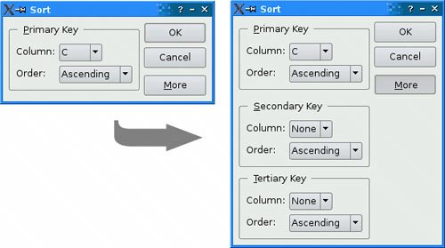
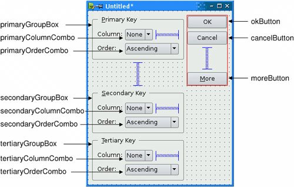
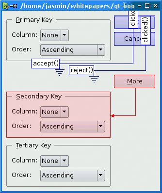
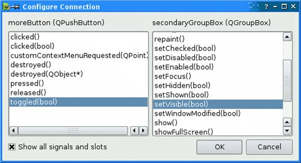

Shape-Changing DialogsWe have seen how to create dialogs that always show the same widgets whenever they are used. In some cases, it is desirable to provide dialogs that can change shape. The two most common kinds of shape-changing dialogs are extension dialogs and multi-page dialogs. Both types of dialog can be implemented in Qt, either purely in code or using Qt Designer. Extension dialogs usually present a simple appearance but have a toggle button that allows the user to switch between the dialog's simple and extended appearances. Extension dialogs are commonly used for applications that are trying to cater for both casual and power users, hiding the advanced options unless the user explicitly asks to see them. In this section, we will use Qt Designer to create the extension dialog shown in Figure 2.10. Figure 2.10. The Sort dialog with simple and extended appearancesThe dialog is a Sort dialog in a spreadsheet application, where the user can select one or several columns to sort on. The dialog's simple appearance allows the user to enter a single sort key, and its extended appearance provides for two extra sort keys. A More button lets the user switch between the simple and extended appearances. We will create the widget with its extended appearance in Qt Designer, and hide the secondary and tertiary keys at run-time as needed. The widget looks complicated, but it's fairly easy to do in Qt Designer. The trick is to do the primary key part first, then duplicate it twice to obtain the secondary and tertiary keys:
If a layout doesn't turn out quite right or if you make a mistake, you can always click Edit|Undo or Form|Break Layout, then reposition the widgets and try again. We will now add the Secondary Key and Tertiary Key group boxes:
The resulting grid layout has two columns and four rows, giving a total of eight cells. The Primary Key group box, the leftmost vertical spacer item, the Secondary Key group box, and the Tertiary Key group box each occupy a single cell. The vertical layout that contains the OK, Cancel, and More buttons occupies two cells. That leaves two empty cells in the bottom-right of the dialog. If this isn't what you have, undo the layout, reposition the widgets, and try again. Rename the form "SortDialog" and change the window title to "Sort". Set the names of the child widgets to those shown in Figure 2.13. Figure 2.13. Naming the form's widgetsClick Edit|Edit Tab Order. Click each combobox in turn from topmost to bottommost, then click the OK, Cancel, and More buttons on the right side. Click Edit|Edit Widgets to leave tab order mode. Now that the form has been designed, we are ready to make it functional by setting up some signalslot connections.Qt Designer allows us to establish connections between widgets that are part of the same form. We need to establish two connections. Click Edit|Edit Signals/Slots to enter Qt Designer's connection mode. Connections are represented by blue arrows between the form's widgets. Because we chose the "Dialog with Buttons Right" template, the OK and Cancel buttons are already connected to QDialog's accept() and reject() slots. Connections are also listed in Qt Designer's signal/slot editor window. To establish a connection between two widgets, click the sender widget and drag the red arrow line to the receiver widget, then release. This pops up a dialog that allows you to choose the signal and the slot to connect. Figure 2.14. Connecting the form's widgets The first connection to establish is between the moreButton and the secondary-GroupBox. Drag the red arrow line between these two widgets, then choose toggled(bool) as the signal and setVisible(bool) as the slot. By default,Qt Designer doesn't list setVisible(bool) in the list of slots, but it will appear if you enable the Show all signals and slots option. Figure 2.15. Qt Designer's connection editorThe second connection is between the moreButton's toggled(bool) signal and the tertiaryGroupBox's setVisible(bool) slot. Once the connections have been made, click Edit|Edit Widgets to leave connection mode. Save the dialog as sortdialog.ui in a directory called sort. To add code to the form, we will use the same multiple inheritance approach that we used for the Go-to-Cell dialog in the previous section. First, create a sortdialog.h file with the following contents:
#ifndef SORTDIALOG_H
#define SORTDIALOG_H
#include <QDialog>
#include "ui_sortdialog.h"
class SortDialog : public QDialog, public Ui::SortDialog
{
Q_OBJECT
public:
SortDialog(QWidget *parent = 0);
void setColumnRange(QChar first, QChar last);
};
#endif
Then create sortdialog.cpp:
1 #include <QtGui>
2 #include "sortdialog.h"
3 SortDialog::SortDialog(QWidget *parent)
4 : QDialog(parent)
5 {
6 setupUi(this);
7 secondaryGroupBox->hide();
8 tertiaryGroupBox->hide();
9 layout()->setSizeConstraint(QLayout::SetFixedSize);
10 setColumnRange('A', 'Z');
11 }
12 void SortDialog::setColumnRange(QChar first, QChar last)
13 {
14 primaryColumnCombo->clear();
15 secondaryColumnCombo->clear();
16 tertiaryColumnCombo->clear();
17 secondaryColumnCombo->addItem(tr("None"));
18 tertiaryColumnCombo->addItem(tr("None"));
19 primaryColumnCombo->setMinimumSize(
20 secondaryColumnCombo->sizeHint());
21 QChar ch = first;
22 while (ch <= last) {
23 primaryColumnCombo->addItem(QString(ch));
24 secondaryColumnCombo->addItem(QString(ch));
25 tertiaryColumnCombo->addItem(QString(ch));
26 ch = ch.unicode() + 1;
27 }
28 }
The constructor hides the secondary and tertiary parts of the dialog. It also sets the sizeConstraint property of the form's layout to QLayout::SetFixedSize, making the dialog non-resizable by the user. The layout then takes over the responsibility for resizing, and resizes the dialog automatically when child widgets are shown or hidden, ensuring that the dialog is always displayed at its optimal size. The setColumnRange() slot initializes the contents of the comboboxes based on the selected columns in the spreadsheet. We insert a "None" item in the comboboxes for the (optional) secondary and tertiary keys. Lines 19 and 20 present a subtle layout idiom. The QWidget::sizeHint() function returns a widget's "ideal" size, which the layout system tries to honor. This explains why different kinds of widgets, or similar widgets with different contents, may be assigned different sizes by the layout system. For comboboxes, this means that the secondary and tertiary comboboxes, which contain "None", end up larger than the primary combobox, which contains only single-letter entries. To avoid this inconsistency, we set the primary combobox's minimum size to the secondary combobox's ideal size. Here is a main() test function that sets the range to include columns 'C' to 'F' and then shows the dialog:
#include <QApplication>
#include "sortdialog.h"
int main(int argc, char *argv[])
{
QApplication app(argc, argv);
SortDialog *dialog = new SortDialog;
dialog->setColumnRange('C', 'F');
dialog->show();
return app.exec();
}
That completes the extension dialog. As the example illustrates, an extension dialog isn't much more difficult to design than a plain dialog: All we needed was a toggle button, a few extra signalslot connections, and a non-resizable layout. In production applications, it is quite common for the button that controls the extension to show the text Advanced >>> when only the basic dialog is visible and Advanced <<< when the extension is shown. This is easy to achieve in Qt by calling setText() on the QPushButton whenever it is clicked. The other common type of shape-changing dialogs, multi-page dialogs, are even easier to create in Qt, either in code or using Qt Designer. Such dialogs can be built in many different ways.
The QStackedWidget class is covered in Chapter 6 (Layout Management). |